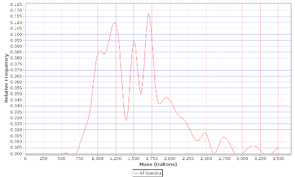

Explanation
A relative frequency distribution of precursor ion masses for the experiment (red curve) against a reference (if selected by the user). It is possible to filter the information for all, identified and unidentified spectra. Three references are available for the users:
- Empirically derived precursor ion mass distributions from all PRIDE experiments that have a single tryptic digest step annotation associated with them and its upper and lower quartiles. This reference is aimed to provide a species independent distribution.
- Reference obtained in an analogous way from PRIDE human experiments.
- Reference obtained in an analogous way from PRIDE mouse experiments.
Experiments that only contained peptides without missed cleavages were ignored as such results are caused by specific search engines parameters and do not reflect the biological background. These peptides are generally shorter and thus these experiments would shift the overall distribution towards the lower masses.
A (red) curve that lies to the left of the empirical distribution (in a different color) identifies a disproportionate number of lower mass peptides being identified / fragmented. In an analogous way, a (red) curve that lies to the right of the empirical distribution identifies a disproportionate number of higher mass peptides being identified / fragmented.
Such alterations may be caused by the general amino acid composition of the organism being investigated, or the digestion protocol used (non-tryptic) but does not necessarily indicate a problem in your experiment.
For human the average tryptic peptide mass is 1100 Daltons. This distribution should encompass this average. The shift to the right in this distribution is expected due to the number of missed cleavages resulting in higher mass peptides.